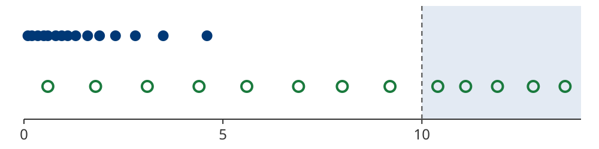
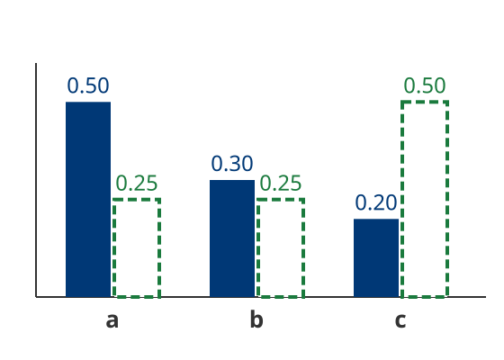
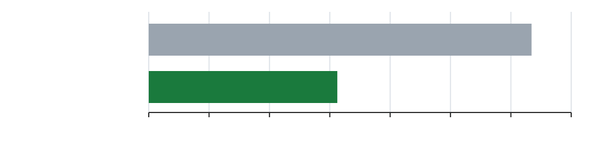
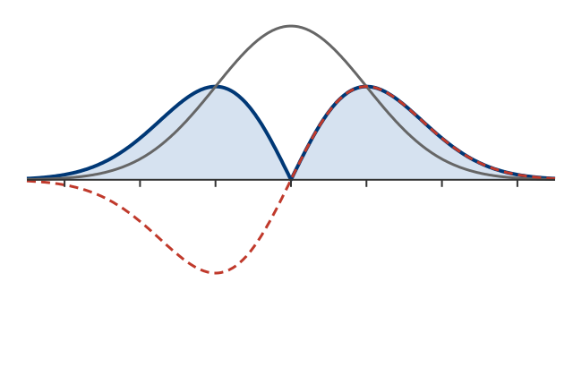
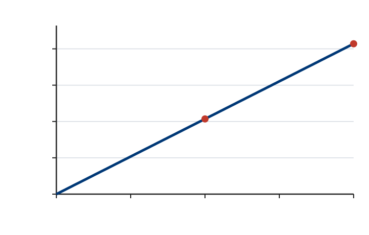
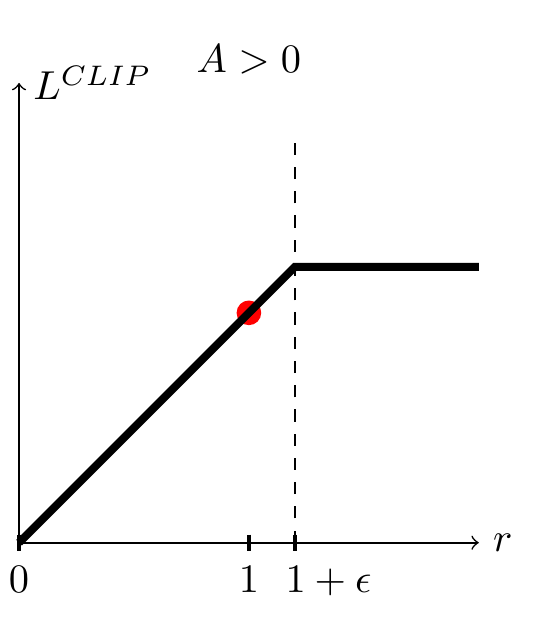
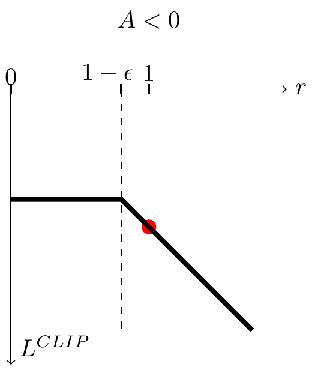

Monte Carlo &
Importance Sampling
Estimating expectations and their gradients by sampling
Albert No · Yonsei University
Fall 2026
Contents
Estimate an Expectation
How accurate is a sample average?
A Known Model, a Hard Average
Point: drawing $X$ is easy; computing $\mathbb{E}_p[f(X)]$ is not
Sampler $p$
a language model
easy: draw one reply $X$
Evaluate $f(X)$
fixed scoring rule
easy: score one reply
Target $\mu = \mathbb{E}_p[f(X)]$
average over all replies
hard: unknown number
Hard here: no convenient closed form, and far too many replies to sum
Sample, Evaluate, Average
Point: an expectation becomes an average of evaluations
1Sample
$X_1, \dots, X_n \stackrel{\text{iid}}{\sim} p$
2Evaluate
$f(X_1), \dots, f(X_n)$
3Average
$\frac{1}{n} \sum_{i=1}^{n} f(X_i) \approx \mu$
IID: independent draws, same $p$, same fixed $f$
Needs draws from $p$, not a formula for $p(x)$
Assumes the mean exists: $\mathbb{E}_p|f(X)| \lt \infty$
Six Points Illustrate the Recipe
$X \sim \mathrm{Unif}[-1,1]^2$, $f(X) = 4 \cdot \mathbf{1}\{X \text{ in disk}\}$
Disk over square $= \pi/4$, so $\mu = \pi$
4 in (filled), 2 out (hollow)
Shows the recipe, not its reliability
Monte Carlo Reuses the Sample Mean
Point: set $Y_i = f(X_i)$, then reuse sample-mean facts
Recall (sample mean). IID $Y_i$ with $\mathbb{E}|Y_1| \lt \infty$: $\mathbb{E}[\bar{Y}_n] = \mathbb{E}[Y_1]$, $\bar{Y}_n \to \mathbb{E}[Y_1]$ (LLN)
- First moment $\mathbb{E}_p|f(X)| \lt \infty$: $\mu$ exists, LLN applies
- Finite $\sigma_f^2 = \mathrm{Var}_p(f(X))$: an extra assumption, for error rates
Unbiased Does Not Mean Accurate
Linearity: $\mathbb{E}[\hat{\mu}_n] = \frac{1}{n} \sum_{i} \mathbb{E}_p[f(X_i)] = \mu$ for every $n$
Exact distribution of $\hat{\mu}_6$ for IID darts · x: value · y: probability
No value equals $\pi$; 35% of runs miss by $\ge 0.5$
Averaging Reduces RMSE
Assume IID draws and finite $\sigma_f^2 = \mathrm{Var}_p(f(X))$
Darts, $\sigma_f \approx 1.64$ · x: draws $n$, y: RMSE, log–log · typical error, not a bound
Estimating the Error Bar
IID evaluations, finite variance, $n \geq 2$
Observed data
$Y_1, \dots, Y_n$
Sample spread
$s_Y^2 = \tfrac{1}{n-1} \sum_{i} (Y_i - \bar{Y}_n)^2$
Estimated SE
$\widehat{\mathrm{SE}} = s_Y / \sqrt{n}$
Unknown truth: SE $= \sigma_f/\sqrt{n}$; observed $s_Y$ estimates $\sigma_f$
$\widehat{\mathrm{SE}}$ estimates typical spread, not this run’s error $|\hat{\mu}_n - \mu|$
A finite $s_Y$ cannot reveal tails no draw visited
Approximate Intervals, Exact Guarantees
Asymptotic approximation
Coverage $\approx 95\%$ for large $n$
IID, $0 \lt \sigma_f^2 \lt \infty$; $n$ alone does not certify the normal fit
Finite-sample bound
Chebyshev: valid at every $n$
Needs known $\sigma_f^2$ or a proven upper bound, not plug-in $s_Y^2$
Different questions: approximate coverage vs guaranteed tail
Bounded Averages Concentrate
Recall (Hoeffding). IID $W_i \in [0,1]$: $\Pr\big(|\bar{W}_n - \mathbb{E}W_1| \geq t\big) \leq 2 e^{-2 n t^2}$
Rescale $Y_i \in [a,b]$, $a \lt b$: $W_i = \frac{Y_i - a}{b - a}$, $t = \frac{\epsilon}{b-a}$ gives
Darts, $Y \in [0,4]$, $\epsilon = 0.01$, $\delta = 0.05$: $n \geq 295{,}111$ suffices
Fixed $f$, chosen before sampling; known range, not estimated
The Rate Is Not the Cost
$X \in \mathbb{R}^d$: dimension leaves the exponent, not the cost
- Exponent $-\tfrac12$: proof used only scalars $Y_i = f(X_i)$
Dimension-free rate $\neq$ dimension-free budget
Tensor Grids Grow With Dimension
Grid: $N = m^d$ points, error $\propto N^{-2/d}$ (smooth $f$) · MC: RMSE $\propto N^{-1/2}$
Schematic, constants set to 1: grid = deterministic error, MC = RMSE; not a runtime race
Rare Events Need Relative Error
Event indicator $Y \sim \mathrm{Bernoulli}(\rho)$, so $\mu = \rho$
Variance $\rho(1-\rho)$ is small; relative RMSE $= \mathrm{RMSE}/|\mu| = \sqrt{(1-\rho)/(n\rho)}$ is large
At fixed $n$, smaller $\rho$: smaller absolute error, larger relative error
gen/p9a_part01.pyChange the Sampler
Visit useful outcomes, keep the target
Most Draws Miss the Tail
Target $X \sim \mathrm{Exp}(1)$, rate $1$:
$p(x) = e^{-x}$ on $x \geq 0$
Integrand $f(x) = \mathbf{1}\{x \gt 10\}$
About $1$ draw in $22{,}026$ lands in the event
Known answer: a benchmark for estimators
 $p(x) = e^{-x}$
$x$
event
tail zoom
$5{\cdot}10^{-5}$
area $e^{-10}$
$p(x) = e^{-x}$
$x$
event
tail zoom
$5{\cdot}10^{-5}$
area $e^{-10}$
gen/p9b_figs.pyA Rare Event Needs Many Samples
Relative RMSE of $n$ ordinary draws: a spread target, not a $95\%$ guarantee
$10\%$ relative RMSE: ordinary MC needs $n \geq 2{,}202{,}547$
Visit Useful Outcomes More Often
Proposal $q$: a new sampler that changes where draws land

$p$: none past $10$ $q$: many past $10$ event $x \gt 10$Same $p$, $f$, $\mu$: the target does not move
Plain average of $f$ under $q$ estimates $\mathbb{E}_q[f]$, not $\mu$
Correct Each Visit's Weight
Target on top, proposal below
$q$ under-visits $x$: $w(x) \gt 1$
$q$ over-visits $x$: $w(x) \lt 1$
Continuous $x$: a density ratio, not a probability

$w = 2$ $w = 1.2$ $w = 0.4$ ■ $p$ ▢ $q$ (dashed)Importance Sampling Preserves the Target
Theorem (importance-sampling identity).
Assume $\mathbb{E}_p|f(X)| \lt \infty$ and $q(x) \gt 0$ wherever $f(x)\,p(x) \neq 0$ (except a null set).
With $w = p/q$ on $\{q \gt 0\}$:
Ordinary IS also needs $p/q$ computable at each draw
Equal means only: says nothing about variance
Proof: Cancel the Proposal
Draws from $q$ land in $\{q \gt 0\}$ with probability $1$
Domain still $\{q \gt 0\}$: the region $\{q = 0\}$ is not yet counted
$\mathbb{E}_p|f| \lt \infty$: every integral here converges absolutely
Proof (continued): Check the Missing Region
So far: $\mathbb{E}_q[fw] = \int_{\{q \gt 0\}} f p\,dx$. Split the full integral:
Only $fp$ must vanish there: $p \gt 0$ is allowed where $f = 0$
Missing Support Cannot Be Repaired
$p$ uniform on $\{1,2,3,4\}$, $f = \mathbf{1}\{x = 4\}$:
target $\mu = 1/4$
$q$ uniform on $\{1,2,3\}$, so $q(4) = 0$
Each draw: $w = 3/4$ and $f = 0$
More draws cannot help: state $4$ is never visited
 $1/4$
$1/3$
$q = 0$
$f = 1$ only here
■ $p$
▢ $q$ (dashed)
$1/4$
$1/3$
$q = 0$
$f = 1$ only here
■ $p$
▢ $q$ (dashed)
Average the Weighted Integrand
Unbiased under the identity's conditions: $\mathbb{E}[\hat{\mu}_{\mathrm{IS}}] = \mathbb{E}_q[fw] = \mu$
Divide by $n$, not by the sum of weights
Extra cost over plain MC: evaluate $p$ and $q$
A Practical Exponential Proposal
Target $p = \mathrm{Exp}(1)$; same event $x \gt 10$
Proposal $q = \mathrm{Exp}(0.1)$, a heavier tail:
Both positive on all $x \geq 0$: support covered
Normalizer known: no unknown $\mu$ inside $q$
Rate $0.1$: an illustrative choice, not optimal
 $1$
$10^{-2}$
$10^{-4}$
$10^{-6}$
$p = \mathrm{Exp}(1)$
$q = \mathrm{Exp}(0.1)$
$x$
event
$1$
$10^{-2}$
$10^{-4}$
$10^{-6}$
$p = \mathrm{Exp}(1)$
$q = \mathrm{Exp}(0.1)$
$x$
event
gen/p9b_figs.pyMore Tail Visits, Corrected Weights
About $8{,}100\times$ more tail hits than $p$
$f w = 0$ up to $10$; above, it varies with $x$
More hits alone: not proof of lower variance
 $10^{-3}$
$10^{-5}$
$10^{-7}$
$\mu = e^{-10}$
$f w = 10\,e^{-0.9x}$
$x$
$10^{-3}$
$10^{-5}$
$10^{-7}$
$\mu = e^{-10}$
$f w = 10\,e^{-0.9x}$
$x$
gen/p9b_calc.py, gen/p9b_figs.pyCompute the Proposal's Error
One draw's second moment, $q = \mathrm{Exp}(\lambda)$: finite only for $0 \lt \lambda \lt 2$
Relative variance per draw: $14.3067 - 1 \approx 13.3067$
Same Target, Less Relative Error
Draws needed for relative RMSE $\leq 0.1$, same $\mu = e^{-10}$

ordinary MC IS, $q = \mathrm{Exp}(0.1)$ $2{,}202{,}547$ $1{,}331$ $1$ $10^{2}$ $10^{4}$ $10^{6}$$n = \lceil \text{relative variance} / 0.01 \rceil$: $\;22{,}025.5 \to 2{,}202{,}547$; $\;13.31 \to 1{,}331$
Exact-formula calculation, not measured runtime; neither is a $95\%$ guarantee
gen/p9b_calc.pyCoverage and Variance Are Different
1 · Validity
$q \gt 0$ wherever $fp \neq 0$; $\mathbb{E}_p|f|\lt\infty$
gives: unbiased, same $\mu$
$\mathrm{Exp}(0.1)$: positive on all $x \geq 0$ ✓
2 · Precision
$\int f^2 p^2 / q$ finite and small
gives: small RMSE per draw
$\mathrm{Exp}(0.1)$: relative variance $13.3$ vs $22{,}025$ ✓
Valid ≠ useful: a covering $q$ can have larger, even infinite, variance
Control Proposal Risk
A correct mean is not enough
The Second Moment Decides
$\hat{\mu}_{\mathrm{IS}}$ is a sample mean of $Y = fw$ under $q$:
Valid when the integral is finite
Infinite integral: infinite variance, no finite RMSE
The criterion has $f^2$ in it: weights alone do not decide
Follow the Weighted Integrand
$f^2 p^2/q$ is large where $|f|p$ is big, $q$ small
So aim $q$ at $|f|\,p$, not at $p$
Absolute value: a density is never negative
Illustration: $p = \mathcal{N}(0,1)$, $f(x) = x$
Intuition here, not yet an optimality proof

$p$ $|f|\,p$ $f p$ (signed) $|f|p = 0$ at $x = 0$ $x$gen/p9b_figs.pyThe Optimal Proposal
Theorem (optimal proposal).
Let $c = \mathbb{E}_p|f(X)| \in (0, \infty)$. Among densities $q$ with $q \gt 0$ wherever $fp \neq 0$, the per-draw variance $\mathrm{Var}_q(fw)$ is minimized by
With $n$ draws: $\mathrm{Var}(\hat{\mu}_{\mathrm{IS}}) = (c^2 - \mu^2)/n$; any sign of $f$
A formula, not yet a usable sampler: $q^*$ contains $c$
Proof: A Common Lower Bound
Recall. $\mathbb{E}[Z^2] \geq (\mathbb{E}Z)^2$, equality iff $Z$ is a.s. constant
Take $Z = |f(X)|\,w(X)$ with $X \sim q$:
$|f|p \neq 0$ exactly where $fp \neq 0$: same coverage
Same floor for every admissible $q$; equality iff $|f|w$ constant $q$-a.s.
Proof (continued): Attain the Bound
Floor: $\mathbb{E}_q[(fw)^2] \geq c^2$ for every admissible $q$. Now plug in $q^*$:
Sign of $f$ may flip; the magnitude stays $c$
$q^*$ is a density: $\int |f|p/c = 1$; zero only where $fp = 0$
One-Sign Integrands Permit Zero Variance
Indicator $f \geq 0$: $c = \mu = e^{-10}$
Each draw: $f w^* = e^{-10}$ exactly, so variance $0$
Oracle benchmark: built from the known answer
Sign-changing $f$: usually $c^2 - \mu^2 \gt 0$
 $q^*(x) = e^{-(x-10)}$
$q^*(x) = e^{-(x-10)}$for $x \gt 10$ $x$ each draw: $f w^* = e^{-10}$
gen/p9b_figs.pyThe Oracle Needs a Normalizer
unknown target
on $x \gt 10$
Circular: the weight needs $c$, and here $c = \mu$ is the answer
Two different capabilities: sample $q^*$, or evaluate its normalized weight
Here the tail is known: $X = 10 + \mathrm{Exp}(1)$ samples $q^*$, and $c = e^{-10}$ is computable
Harder problems: $c$ unknown, so $w^*$ cannot be evaluated
Light Tails Can Destroy Variance
New integrand $f(x) = x$; $p = \mathrm{Exp}(1)$, $\mu = 1$
Proposal $q = \mathrm{Exp}(2)$: $q(x) = 2e^{-2x}$
Both positive on $x \geq 0$: identity valid
Growing weights: a warning, not yet a proof
 $q = \mathrm{Exp}(2)$
$p = \mathrm{Exp}(1)$
$\ln 2$
$q \lt p$ beyond $\ln 2$:
tail under-visited
$x$
$q = \mathrm{Exp}(2)$
$p = \mathrm{Exp}(1)$
$\ln 2$
$q \lt p$ beyond $\ln 2$:
tail under-visited
$x$
gen/p9b_figs.pyA Finite Mean, an Infinite Second Moment
$f(x) = x$, $p = \mathrm{Exp}(1)$, $q = \mathrm{Exp}(2)$, $w = e^{x}/2$:
Mean: the cancellation leaves $e^{-x}$. Square: it leaves no decay
Unbiased, yet $\mathrm{Var} = \infty$: RMSE is infinite at every $n$
Consistency Is Not an Error Bar
Same estimator: $Y_i = X_i\,w(X_i)$ iid under $q = \mathrm{Exp}(2)$
Converges, but the usual finite-variance error tools do not apply
A calm batch, or a small sample variance, does not prove a finite second moment
Check the Integrand, Not Just Weights
Same $f(x) = x$, $p = \mathrm{Exp}(1)$; heavier proposal $q = \mathrm{Exp}(\tfrac12)$:
Variance per draw $\tfrac{32}{27} - 1 = \tfrac{5}{27}$, vs $1$ for ordinary MC
Criterion: $\int f^2 p^2 / q \lt \infty$. Bare $\mathbb{E}_q[w^2] = \tfrac43$ is a different number
Heavier tails: a heuristic, not a guarantee for every $f$
Remove the Normalizer
The target is known only up to a constant
The Target Is Known Up to Z
$Z$ unknown: not zero, not infinite, just not computed
Knowing $p \propto \tilde p$ gives no value of $p/q$
Compute Unnormalized Weights
Draw $X_1,\dots,X_n \stackrel{\text{iid}}{\sim} q$ and evaluate the computable ratio:
Support: $q(x)\gt 0$ wherever $\tilde p(x)\gt 0$, not only where $f(x)p(x)\neq 0$
Common $Z$ blocks ordinary weighting but can cancel in a ratio
Normalize Only a Positive Total
Self-normalized importance sampling (SNIS), defined when $\sum_j \tilde w_j \gt 0$:
Shares $\bar w_i\ge 0$ sum to one: no extra division by $n$
All sampled weights zero: undefined, not silently $0$
Two Averages Form One Ratio
Conditions: iid draws, full target support, $\mathbb{E}_p|f(X)|\lt\infty$
Each average is unbiased for its own integral
Not the ratio: $\mathbb{E}[A_n/B_n]\neq \mathbb{E}[A_n]/\mathbb{E}[B_n]$ in general
The Ratio Converges to the Target
Iid draws, full target support, $\mathbb{E}_p|f(X)|\lt\infty$:
Positive limit $Z$: eventually $B_n\gt 0$, so the ratio is defined
A limit only: no finite-$n$ unbiasedness, and finite batches can still total zero
One Draw Exposes SNIS Bias
States $a,b$ with $\tilde p=(3,1),\ q=(1/2,1/2),\ f=(1,0)$: target $\mu=3/4$
Exact, $n=1$: the weight cancels, so $\hat\mu_{\mathrm{SN}}=f(X_1)$
Generally biased, not always: constant $f$ or $q=p$ gives no bias
Normalization Does Not Guarantee Improvement
Removing $Z$ trades one obstacle for a ratio-estimator problem
| Property | Ordinary IS | SNIS |
|---|---|---|
| Unknown $Z$ | blocks $w=p/q$ | cancels |
| Consistent | $q$ covers $fp$ | $q$ covers all of $p$ |
| Unbiased, finite $n$ | yes | not in general |
| Smaller error | no universal ranking either way | |
Consistency in both columns also needs $\mathbb{E}_p|f(X)|\lt\infty$
One Draw Can Dominate the Weights
Weights $\tilde w=(0.1,\ 0.2,\ 0.1,\ 0.1,\ 9.5)$ sum to $10$
Sample 5 holds $95\%$ of the normalized weight
Its contribution $\bar w_5 f(X_5)$ depends on $f$; no proof of infinite variance
Effective Sample Size Summarizes Imbalance
Nonnegative weights with positive total:
Weight balance only: not $n$ independent draws, not an error bar for $f$
Healthy ESS Can Miss Missing Support
Target $p$ uniform on $\{1,2,3,4\}$, proposal $q$ uniform on $\{1,2,3\}$
Equal weights, so $\bar w_i=1/n$: IS and SNIS both return $0$
Failed assumption: $q(4)=0\lt p(4)$, so the theorem is not refuted
What You Can Compute Decides What Is Available
Each row lists sufficient inputs; several rows can hold at once
These requirements tell us which estimators are available, not which is best
Differentiate Expectations
Learning moves the distribution we average
The Distribution Now Changes
Now $\theta$ moves the distribution that generates $X$
$R$ fixed: $\theta$ enters only through the draw
Frozen Samples Hide the Derivative
Differentiating stored rewards misses the sampler
Can Monte Carlo estimate $\nabla_\theta J$? Yes: write it as an expectation, then sample
A Gaussian Sample Is a Recipe
Recall (Gaussian by construction). $X = DW + \mu$, with $W$ independent $\mathcal{N}(0,1)$ entries, is Gaussian with mean $\mu$
Randomness sits in $\varepsilon$; $\theta$ enters by a smooth addition
Differentiate in $\theta$ with the noise $\varepsilon$ held fixed
Differentiate Along the Sampling Path
Needs: law of $\varepsilon$ free of $\theta$; $T_\theta$ and $R$ differentiable
Swap of $\nabla$ and $\mathbb{E}$ must be justified (scalar case shown)
Check the Gaussian Gradient
Example: $R(X) = X^2$ with $X = \theta + \varepsilon$, $\;\varepsilon \sim \mathcal{N}(0,1)$
Analytic check
Pathwise contribution
Means agree; one draw $2X$ scatters around $2\theta$ with variance $4$
Discrete Draws Need Another Route
A sampled action jumps; its probability moves smoothly
No smooth path from $\theta$ to the action: differentiate its probability
The Log-Derivative Identity
Rewrite a probability derivative as probability $\times$ score
Needs $p_\theta(x) \gt 0$, differentiable in $\theta$, with $x$ held fixed
Parameter score $s_\theta(x) = \nabla_\theta \ln p_\theta(x)$, natural log
Not $\nabla_x \ln p(x)$: that score differentiates in the sample
Reward Times Score Gives the Gradient
Theorem (score-function identity).
Fixed finite set $\mathcal{X}$; $p_\theta(x) \gt 0$, differentiable in $\theta$; fixed reward $R : \mathcal{X} \to \mathbb{R}$
Only $\ln p_\theta$ is differentiated; $R$ is just evaluated
Continuous $X$: needs a justified swap and support fixed in $\theta$
Proof: Expand the Expectation
A finite expectation is a weighted sum over fixed outcomes; only the weights depend on $\theta$
Outcome set $\mathcal{X}$ and rewards $R(x)$: unchanged by $\theta$
The sampling step is gone: no derivative of a drawn $X$ needed
Proof (continued): Differentiate the Finite Sum
Recall: $J(\theta) = \sum_{x} p_\theta(x)\, R(x)$, finitely many terms
Finite sum: differentiate term by term
Integrals or infinite sums: this swap needs its own proof
Proof (continued): Read an Expectation
So far: $\nabla_\theta J(\theta) = \sum_{x} R(x)\, \nabla_\theta\, p_\theta(x)$
Weights $p_\theta(x)$ turn the sum into an expectation
So the draws must come from the current $p_\theta$
Average the Gradient Contributions
$\mathbb{E}[\hat{g}_n] = \nabla_\theta J(\theta)$ under the theorem’s conditions
Needs samples, $R$ values and $\nabla_\theta \ln p_\theta$; never $\nabla R$
A Two-Action Policy
An exact derivative to check the estimator against
At $\theta = 0$: $\sigma = \tfrac12$, so $J'(0) = \tfrac14$
Parameter continuous; actions discrete
Both Routes Give the Same Derivative
Scores $s_\theta(a_1) = 1 - \sigma$ and $s_\theta(a_0) = -\sigma$
At $\theta = 0$ each draw gives $0$ or $\tfrac12$; only their mean is $\tfrac14$
The Score Has Mean Zero
Under the theorem’s conditions: finite fixed $\mathcal{X}$, $\;p_\theta \gt 0$ differentiable
Mean zero, not zero: a single score is usually nonzero
A Valid Baseline Preserves the Gradient
Subtract one constant $b$ from every reward
Allowed: $b$ fixed before the draw, not a function of $X$
An action-dependent $b(X)$ need not cancel: requires $\mathbb{E}[b(X)\,s_\theta(X)]=0$
Same mean; lower variance not guaranteed
This Baseline Removes the Toy’s Variance
Toy at $\theta = 0$; contribution $g_b = (R - b)\, s_\theta$
Exact two-outcome calculation, not an empirical result
A Bad Baseline Adds Variance
Same toy, baseline $b = 2$: contributions $-\tfrac12$ and $1$
Mean stays $\tfrac14$; the baseline choice sets the variance
Two Gradient Estimators, Different Requirements
Pathwise
Recipe $X = T_\theta(\varepsilon)$, noise law free of $\theta$
$T_\theta$ and $R$ differentiable
Gaussian: average $2X$ for $R = X^2$
Score function
$\ln p_\theta(x)$ differentiable in $\theta$
$R$ only evaluated: no $\nabla R$
Two actions: average $R\, s_\theta$
Both need a justified $\nabla$/$\mathbb{E}$ swap; neither always has lower variance
Reuse Samples Responsibly
Old data: a second distribution, same target
Old Samples, a New Target
Fixed prompt $c$; reward $R(c,x)$ fixed during the update
Mismatch: samples from $\pi_b$, expectation under $\pi_\theta$
Importance Weights Correct the Mismatch
Same IS identity, relabelled: target $p=\pi_\theta$, proposal $q=\pi_b$
- Ratio: current over behavior, at each logged response
- Coverage: $\pi_b(x\mid c) \gt 0$ wherever $\pi_\theta(x\mid c) \gt 0$
- Estimate: $\frac1n\sum_i w(x_i)\,R(c,x_i)$ over logged $x_i \sim \pi_b(\cdot\mid c)$
Sequence Ratios Multiply
Chain rule: exact, same history top and bottom
No independence assumed: each factor depends on its prefix
Compounding Mismatch Can Destroy Efficiency
Independent-token toy
- Weight factors independent under $\pi_b$
- Each $\mathbb{E}[w_t]=1$
- Each $\mathbb{E}[w_t^2]=1.1$
Exact formula, not a measured model

$\mathbb{E}_{\pi_b}[w^2]$, log scale $1$ $10$ $10^2$ $10^3$ $10^4$ $0$ $25$ $50$ $75$ $100$ length $T$ (tokens) $T=100$: $\approx 13{,}781$ $T=50$: $\approx 117$Behavior and Reference Are Different Roles
Three policies, two different comparisons
May coincide at the start; jobs and later values differ
Near $\pi_{\text{ref}}$ says nothing about weights against $\pi_b$
KL Is Not a Variance Certificate
Drift penalty (reference)
Weight cost (behavior)
Two-state example, $\pi_b=\pi_{\text{ref}}$: KL $\approx 0.0017$ nats, $\mathbb{E}_{\pi_b}[w^2] \approx 10{,}001$
Natural log; KL in nats
Reward Tuning Uses This Toolkit
RLHF (reinforcement learning from human feedback): historical InstructGPT case, simplified
- Fixed prompt $c$, dropped from notation
- $r$: reward model fitted to human comparisons
- $\pi_{\text{ref}}$: the supervised fine-tuned (SFT) model
- Toolkit: MC averages + score-function gradients
A Surrogate Is Not a Hard Constraint


PPO: proximal policy optimization
$\hat{A}$: estimated advantage of action $a$ in state $s$
x: ratio $r$ · y: one term · dot: $r=1$
- Flat: no gain from moving $r$ further
- Realized $r$ can still leave $[1-\epsilon,1+\epsilon]$
- Clipped objective $\neq$ exact IS identity
Choose an Expectation Estimator by Its Requirements
Target: $\mu = \mathbb{E}_p[f(X)]$, with $\mathbb{E}_p|f(X)| \lt \infty$ and IID draws
| Estimator | Needs | Honest claim |
|---|---|---|
| Ordinary MC | draws from $p$ | unbiased; RMSE $\sigma_f/\sqrt{n}$ if $\sigma_f \lt \infty$ |
| Importance sampling | draws from $q$, evaluable $p/q$, $q \gt 0$ where $fp \neq 0$ | unbiased; variance finite only if $\mathbb{E}_q[(fw)^2] \lt \infty$ |
| Self-normalized IS | $\tilde p \propto p$, $q \gt 0$ where $p \gt 0$, positive weight total | consistent; generally biased at finite $n$ |
Unbiased or consistent is not low error: check the second moment
Choose a Gradient Estimator by Its Requirements
Target: $\nabla_\theta\, \mathbb{E}_{p_\theta}[R(X)]$, the gradient of an expectation
| Estimator | Needs | Honest claim |
|---|---|---|
| Pathwise gradient | $X = T_\theta(\varepsilon)$, law of $\varepsilon$ free of $\theta$; chain rule and swap valid | unbiased under those conditions |
| Score gradient | fixed support, differentiable $p_\theta$; swap valid (finite case shown) | unbiased; a constant baseline $b$ keeps the mean |
Available is not efficient: compare variances on the problem at hand
Questions?